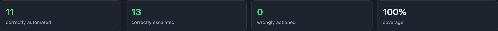

Agents for Humans · Strands Agents on Amazon Bedrock
github.com/mgraves-centrix/onedecision
One supervisor decision becomes a policy the system can apply, but only after deterministic code proves against real history what it would have done.
